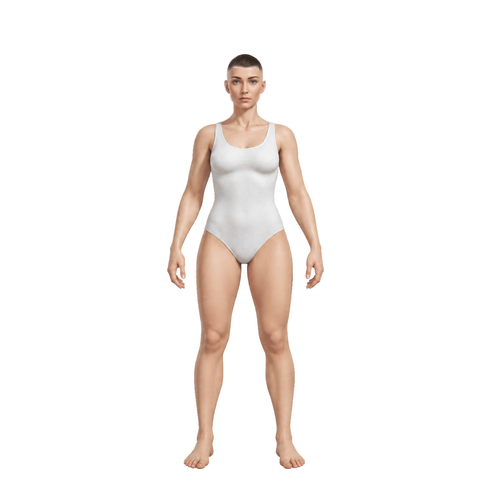
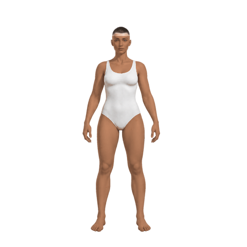
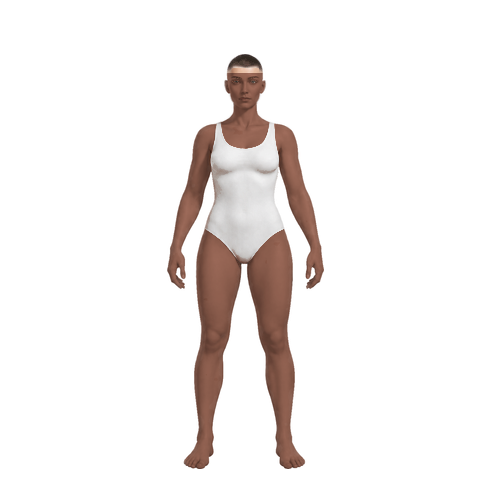
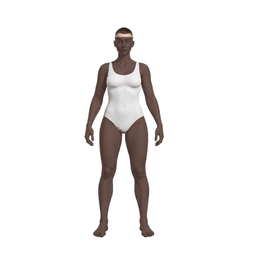
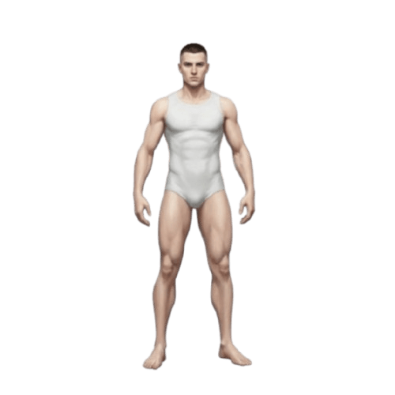
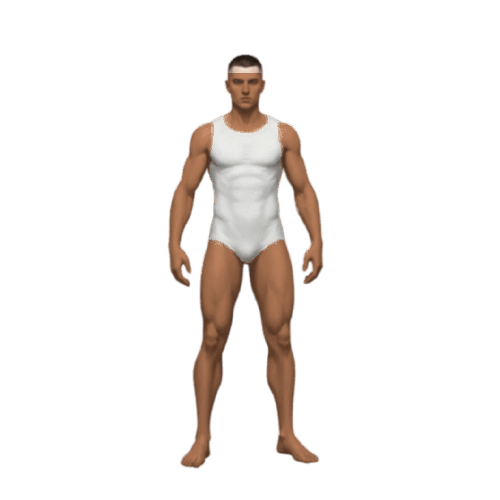
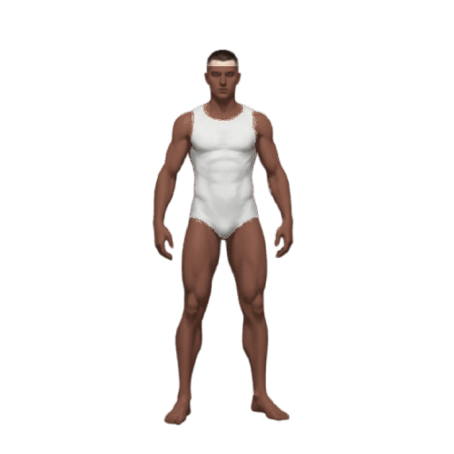
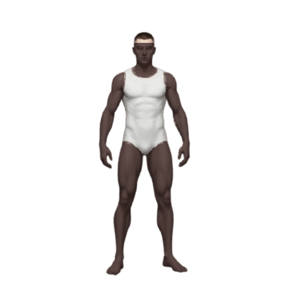

Variações de pele — encaixe preservado
Somente pigmentação. Nenhuma mudança em anatomia, pose, escala, roupa ou silhueta.
Feminino · base fem_5



Masculino · base masc_1




Validação técnica: 500×500 RGBA; canal alpha idêntico ao da base em todos os seis arquivos.